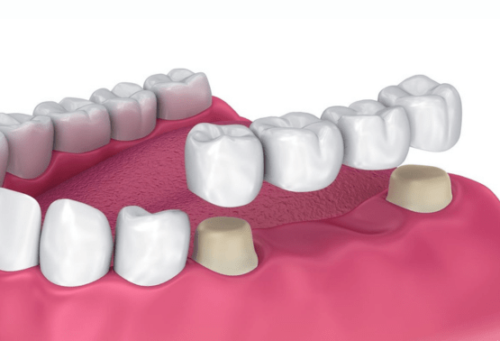

Teeth Cleaning & Scaling
At Sakthi Dental Clinic, we offer advanced, non-surgical gum care using modern LASER technology for precise and effective treatment. Whether you're dealing with early signs of gum disease or a more advanced condition, our skilled professionals ensure thorough cleaning to restore gum health. Scaling is advised for moderate cases to remove plaque and tartar buildup, while more severe periodontal issues may require deep cleaning procedures like root planing, supported by LASER treatment. This approach not only treats existing problems but also serves as a crucial preparatory step before any surgical intervention.
Tooth Filling
At Sakthi Dental Clinic, we specialize in restoring smiles through expert tooth filling services. Whether tooth damage is caused by cavities, trauma, or wear from habits like teeth grinding or nail-biting, our team uses high-quality materials and the latest techniques to repair and protect your teeth. We focus on sealing gaps effectively to prevent future decay and ensure long-term oral health. Our goal is to preserve your natural tooth structure while enhancing both function and appearance, giving you a healthier, more confident smile.
Tooth Extraction
When a tooth is beyond repair, Sakthi Dental Clinic ensures that the extraction process is handled with the utmost care and comfort. Our experienced dental team evaluates every option before recommending removal, but when necessary, we perform extractions using gentle techniques to minimize discomfort. We prioritize creating a stress-free environment, explaining each step to our patients. Your health and comfort are always our focus, and we aim to make tooth extraction as smooth and painless as possible, supporting you through every stage of recovery.
Artificial Complete Denture
At Sakthi Dental Clinic, we craft high-quality complete dentures to restore both function and aesthetics for patients with missing teeth. Our dentures are designed with precision using durable materials, providing a natural look and a comfortable fit. Whether you're replacing several teeth or a full arch, our customized solutions help you regain confidence and improve daily functionality. We focus on delivering practical, long-lasting dentures that enhance your smile and overall oral health.

Dental Implants
Dental implants at Sakthi Dental Clinic offer a modern and reliable solution for replacing missing teeth. Using biocompatible materials like titanium, we securely place artificial roots into the jawbone, creating a stable foundation for prosthetic teeth. Our advanced implant procedures restore both the appearance and strength of your smile, ensuring a natural feel and long-lasting results. Trust our experienced team to help you regain optimal oral function and confidence with cutting-edge implant technology.

Laser Dentistry
At Sakthi Dental Clinic, we utilize advanced laser technology to perform precise, minimally invasive dental treatments. From soft tissue surgeries to gum care, laser procedures offer faster healing, reduced discomfort, and enhanced accuracy. Whether you're undergoing gum reshaping or other corrective treatments, our state-of-the-art laser equipment ensures efficient, safe, and comfortable care tailored to your needs.
Root Canal Therapy
When tooth infections reach deep into the pulp, root canal treatment becomes essential. At Sakthi Dental Clinic, we carefully remove infected tissue, clean the area thoroughly, and seal the tooth to prevent future issues. Our focus is on relieving pain, eliminating infection, and preserving your natural tooth structure for long-term dental health.
Wisdom Tooth Extraction
If impacted or problematic, wisdom teeth can cause discomfort and oral health risks. At Sakthi Dental Clinic, we specialize in gentle and effective wisdom tooth removal, using modern techniques and anesthesia options to ensure a smooth, pain-free experience. We also provide comprehensive post-operative care to support quick recovery and lasting comfort.

Fixed Partial Denture (Bridge)
Our expertly crafted fixed partial dentures offer a secure solution for replacing missing teeth by anchoring prosthetic teeth to adjacent natural teeth or implants. At Sakthi Dental Clinic, we focus on custom-made dental bridges that restore your smile's appearance while improving chewing function and maintaining oral stability.
Teeth Whitening (Bleaching)
Brighten your smile with professional teeth whitening services at Sakthi Dental Clinic. We treat both external and internal stains, using safe bleaching agents to lighten your teeth by several shades. Whether addressing discoloration from food, beverages, or age, our whitening treatments restore your smile's natural radiance and boost your confidence.
Veneers
Transform your smile with dental veneers — thin, custom-made shells designed to cover imperfections such as chips, gaps, or discoloration. At Sakthi Dental Clinic, we offer high-quality veneers that enhance your teeth's appearance, giving you a flawless and natural-looking smile.
Pediatric Dentistry
At Sakthi Dental Clinic, we provide gentle and comprehensive dental care for children. Our friendly team creates a welcoming environment, ensuring young patients feel safe and comfortable during their visits. From routine check-ups to preventive treatments, we focus on building healthy dental habits for a lifetime of bright smiles.
Flap Surgery
For advanced gum disease, flap surgery may be necessary. Our skilled team at Sakthi Dental Clinic performs this procedure by lifting the gum tissue to remove deep-seated plaque and bacteria, then repositioning it for optimal healing. This treatment helps prevent further periodontal issues and supports gum health.
Orthodontic Braces
Correct misaligned teeth with customized orthodontic treatments at Sakthi Dental Clinic. We offer a variety of braces — metal, ceramic, or lingual — to suit your preferences. Our goal is to achieve improved alignment, better bite function, and a confident, harmonious smile.
Clear Aligners
For a discreet alternative to traditional braces, Sakthi Dental Clinic offers clear aligners. These transparent, removable trays gradually shift your teeth into perfect alignment, providing comfort and flexibility throughout your orthodontic journey.